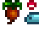
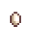
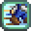

or Dew Not, There Is No Try

TodaySeason & DaySpring 1 · Year 1
Tasks Today—
BridgeNot connected

Upcoming Events
Game SyncRun the setup script on your computer first — it'll print a sync code for you to paste here.
Story Time
Stardrop Holocron — Full-Game Task Database